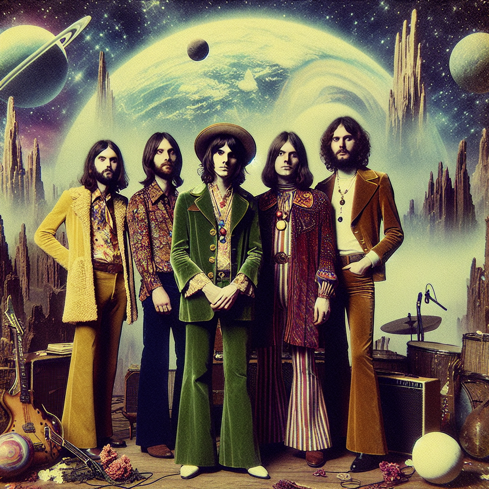

Backstory
In the swirling haze of 1973, amidst the sunburnt tapestry of Australia, emerged a band destined to etch cosmic trails through the collective consciousness of a generation. Moonlit Reverie, the sonic architects of Cosmic Nostalgia, wove a hypnotic blend of Psychedelic Rock and Dream Pop that shimmered like stardust on the desert air. At the helm was Adrian "Aether" Jones, the mercurial frontman with a voice that whispered secrets of the universe. His guitar, a battered Rickenbacker 360, was more spaceship than instrument, channeling celestial echoes that resonated with the soul's deepest yearnings. Beside him, Luna "Stargazer" Mitchell, the siren of the synth, conjured dreamscapes from her vintage Mellotron. Her ethereal melodies bathed listeners in lunar light, beckoning them to transcend the mundane and explore the infinite. On bass, Jasper "Quasar" Fields, a virtuoso whose fingers danced like comets across the fretboard of his Fender Jazz Bass. His rhythms were the heartbeat of the cosmos, grounding the band's ethereal flights with gravitational grooves. And at the back, the enigmatic percussionist, Max "Nebula" Reed, wielded his Ludwig Vistalite drums like a shaman conducting a celestial rite. Each beat was a pulsar pulse, propelling the band into interstellar realms. Together, Moonlit Reverie spun sonic tales of lost galaxies and forgotten dreams, crafting a legacy that would linger like a dream — a testament to the power of music to transcend time and space.
Band Members

Discography
**Album Title 1: "Celestial Echoes"**
1. Stargazing in the Outback
- 2. Cosmic Caravan
- 3. Nebula's Rhapsody
- 4. Celestial Sea of Dreams
- 5. Galactic Whispers
- 6. Transcendental Tides
- 7. Echoes of the Ether
- 8. Psychedelic Mirage
- 9. Lunar Reverie
- 10. Astral Journey
- 11. Solar Winds Serenade
- 12. Quantum Reflections
- 13. Dreamcatcher’s Lullaby
- 14. Cosmic Reverberation
- 15. Starlit Serenade
**Album Title 2: "Dreamscapes of the Infinite"**
1. Aurora's Embrace
- 2. Temporal Odyssey
- 3. Beyond the Horizon
- 4. Velvet Skies
- 5. Dreamweaver's Realm
- 6. Celestial Voyage
- 7. Echoes of Eternity
- 8. Moonlit Memories
- 9. Starbound Soliloquy
- 10. The Infinite Waltz
- 11. Sonic Stargazers
- 12. Galactic Drift
- 13. Interstellar Illusions
- 14. Celestial Harmony
- 15. Ephemeral Euphoria
**Album Title 3: "Interstellar Visions"**
1. Cosmic Awakening
- 2. The Great Convergence
- 3. Echoes Through the Cosmos
- 4. Celestial Paradox
- 5. Stargazer's Lament
- 6. Lost in the Nebula
- 7. Astral Ascension
- 8. Quantum Voyage
- 9. Symphony of the Spheres
- 10. Celestial Dreamscape
- 11. Cosmic Chiaroscuro
- 12. Dreams of the Infinite
- 13. Galactic Reflections
- 14. Eternal Horizons
- 15. Celestial Reverie